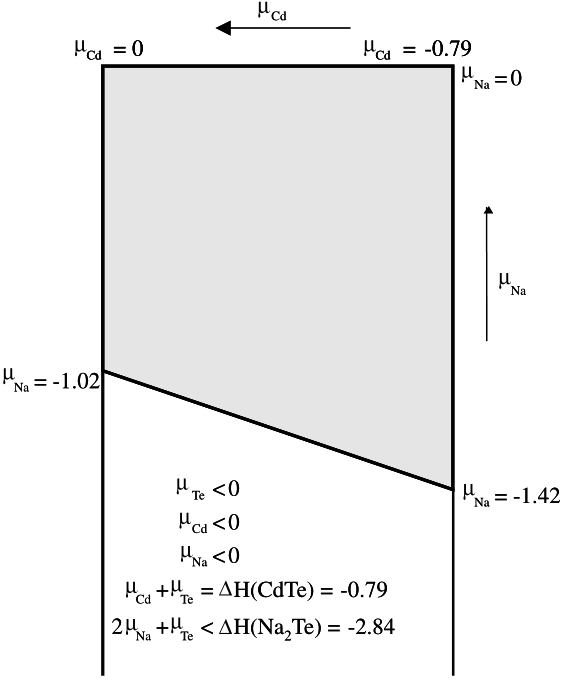
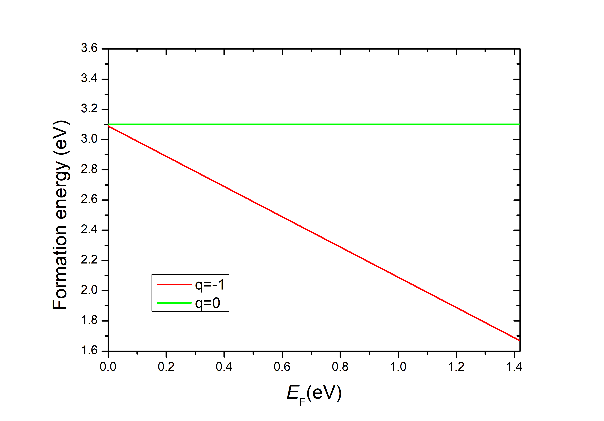

Defect properties¶
In this section, we will provide modules dealing with defects, in particular point defect/impurity. We use ‘defect’ to generically refer to both point defect and impuruty from now on.
We usually calculate defect in a supercell geometry to provide the defect sufficiently well separated. A formalism based on formation energies allows calculation of defect equilibrium. In the case of semiconductors, it also allows the calculation of relative stability of different charge states of a given defect.
The formation energy of a defect X with charge q could be defined as:
\(E^{f}[\alpha,q]=E_{tot}[\alpha,q]-E_{tot}[host]-\sum{n_{i}\mu_{i}}+qE_{F}+E_{corr}\)
\(E_{tot}[\alpha,q]\) is the total energy of supercell with defect \(\alpha\) and \(E_{tot}[host]\) is the total energy for perfect crystal using an equivalent supercell. The integer \(n_{i}\) indicates the number of type i. One could simulate the atoms increase and decrease during forming a defect using \(n_{i}>0\) and \(n_{i}<0\) correspondingly. The \(\mu_{i}\) are the corresponding chemical potentials of these species. The analog of chemical potential for charge is given by chemical potential of the electrons (\(E_{F}\)). The last term \(E_{corr}\) is a correction term.
It is challenging to determine the chemical potential of an element in compound. Consider the growth of \(A_{x}B_{y}\)
\(x\mu_{A}+y\mu_{B}=\mu_{A_{x}B_{y}}\)
Assuming that the most stable elemental form of A and B are both solid, corresponding to \(\mu^{*}_{A}\) and \(\mu^{*}_{B}\)
\(\mu_{A}\leq \mu^{*}_{A}\)
\(\mu_{B}\leq \mu^{*}_{B}\)
So the lower bounds on and \(\mu_{A}\) and \(\mu_{B}\) transform into upper bounds for the corresponding other species
\(\mu_{A_{x}B_{y}}-y\mu^{*}_{B}\leq x\mu_{A}\)
\(\mu_{A_{x}B_{y}}-x\mu^{*}_{A}\leq y\mu_{B}\)
One could directly use this form
\(\Delta\mu_{A}=\mu_{A}-\mu^{*}_{A}\)
\(\Delta\mu_{B}=\mu_{B}-\mu^{*}_{B}\)
\(\Delta\mu_{A_{x}B_{y}}=\mu_{A_{x}B_{y}}-x\mu^{*}_{A}-y\mu^{*}_{B}=\Delta H_{f}(A_{x}B_{y})\)
Then
\(x\Delta\mu_{A}+y\Delta\mu_{B}=\Delta H_{f}(A_{x}B_{y})\)
Control the allocation of \(\Delta H_{f}(A_{x}B_{y})\) and you will get the lower bounds for \(\mu_{A}\) and \(\mu_{B}\). Under the rich A limit, \(\mu_{A}\) could tend to the upper bound \(\mu^{*}_{A}\) and so on. Finally, defect formation energy could be manipulated by the concentration limits of each element. You could predict the defect type in deferent chemical potential section.
Gas-phase species is critical to take the temperature and pressure dependences into account. More details of basic knowledge could be found in
10.1103/RevModPhys.86.253
10.1016/j.commatsci.2004.02.024
Defect could carry different charges. The external field will cause Fermi level shift resulting in the transition between different charge states. One could simulate this process by changing the chemical potential of the electrons (\(E_{F}\)). Considering systems with different electron number would have intrinsic energy different, a correction term \(E_{corr}\) should be given. Ususally, this could be simply defined as \(q\Delta V\) where \(\Delta V\) is the potential different between defect system and host system at a place far away from the defect. .. image:: picture/scheme_Ef.png
There are two main problems in charged defect systems:
How to screen the long range image charge Coulomb interation due to the finite supercell size.
How to eliminate the remarkable dissimilarity between a real charge put on host band-edge states and a virtual jellium charge (especially in 2D systems with vacuum region).
And PWmat provides two modules to solve them, i.e. image charge correction method and ‘transfer to real state’ model (TRSM).
10.1103/PhysRevB.102.174110
10.1103/PhysRevB.101.165306
Defect level¶
From the form of defect formation energy
\(E^{f}[\alpha,q]=E_{tot}[\alpha,q]-E_{tot}[host]-\sum{n_{i}\mu_{i}}+qE_{F}+q\Delta V\)
We could summarize the process of calculating defect level:
Do JOB = RELAX for primitive cell and contrust a large enough supercell.
Do JOB = SCF with OUT.VATOM = T for the supercell without defect with OUT.VATOM = T.
Do JOB = SCF for the most stable elemental state of each defect element.
Calculate the formation enthalpy (\(\Delta H_{f}(A_{x}B_{y})\)) of host structure and determain the range of defect element chemical potential.
Construct the defect you like to study in the supercell and do JOB = RELAX with different defect charge states (change NUM_ELECTRON).
Do JOB = SCF for all relaxed defect structures with OUT.VATOM = T.
Calculate the \(\Delta V\) using data in OUT.VATOM.
Plot the formation energy as a function of chemical potential and \(E_{F}\). One could set the energy of VBM or the Fermi level of q=0 to 0 so the \(E_{F}\) could only be the energy shift.
Example GaAs¶
We use Ga vacancy GaAs as an example. A 2x2x2 supercell is used here just for demonstration. The Ga atom at (0,0,0) is removed from the original bulk supercell. We only calculate q=0 and q=-1 defect states in Ga riched limit for demonstration. The fully relaxed structure of original bulk supercell, q=0 Ga vacancy and q=-1 Ga vacancy are stored in atom.config64.bulk, atom.64.VGa0.rel and atom.64.VGa-1.rel. The corresponding potential are stored in OUT.VATOM.bulk, OUT.VATOM.VGa0.rel and OUT.VATOM.VGa-1.rel. We choose potential for Ga at (0.5,0.5,0.5) to correct the potential energy
\(\Delta V=V(\alpha,q,(0.5,0.5,0.5))-V(host,(0.5,0.5,0.5))\)
Note:
We use the PWM pseudopotential and default 45 Ryd Ecut to reduce the calculation amount. In your real calculation requirement, check it carefully by comparing the results using PD04 or SG15 since PWM pseudopotential might not be suitable for geometric optimazation.
Depending on the problem, one might want to use SPIN=2 for both q=0 and q=-1 defect calculation. Here we just use SPIN=1 for illustrative purpose.
Finally you will get
The transition level is close to VBM. And defect with q=-1 is more stable than q=0.
Image charge correction method¶
In scenarios such as shallow donors or acceptors, the defect wave function is very extended and spreads over a large space so that a large supercell must be utilized, whereas, for a relatively deep defect, the defect wave function is rather localized and thus can be contained in a small supercell. As long as the supercell is larger than the spreading of the defect wave function and is converged in elastic relaxation, the result of the finite supercell approaches that of the infinite system very quickly for charge-neutral defects where the total charge around the defect site is zero. However, if the defect is charged, the convergence is slow due to the long range image-image charge interaction resulting from the utilization of a finite supercell in the periodic boundary condition. So it is necessary to provide an imagine charge correction to make the convergence faster to the infinite supercell result or even a new scheme beyond the jellium model.
Unlike previous approaches, where analytical formulas with adjustable parameters are used to describe the image charge interaction or defect charge profile, we use the self-consistent field (SCF) calculated charge density instead of the macroscopic dielectric constant, considering it already contains the information for the screening.
Introduction¶
After introducing a new image charge interaction correction term \(E_{corr}(\alpha,q)\), the formula of formation energy will be
\(E^{f}[\alpha,q]={E_{tot}[\alpha,q]+E_{corr}(\alpha,q)}-E_{tot}[host]-\sum{n_{i}\mu_{i}}+qE_{F}+q\Delta V\)
Then we could define the charge-defect energy correction
\(E_{C}(\alpha,q)=E_{corr}(\alpha,q)+q\Delta V\)
This \(E_{C}(\alpha,q)\) is used to get the infinite system results from finite supercell calculations. We only deal with the screening effect due to wave function SCF treatment (i.e., the electronic structure part), and ignore the ionic screening component. From small supercell to large supercell, we will fix the atomic positions as in the original small supercell, while using the pristine crystal to fill the rest of the large supercell. The atomic relaxation near the defect induced by the change of defect charge is included in small supercell. For a polar crystal, the ionic displacement for atoms far away from the defect can still provide further screening effect, which reduces the image interaction. Our final formula is likely also applicable to ionic screening as long as the nuclear charges are treated as part of the total charge (e.g., using a Gaussian broadening to represent the nuclear charge).
Consider the Non-SCF unscreened situation first. We assume the defect is in charge state q with a wave function \(\varphi'_{d}\), define \(\varphi_{d}=\sqrt{|q|}\varphi'_{d}\) and assume the defect charge density is \(\rho_{d}(r)\). Then we will have
\(\rho_{d}=\varphi^2_{d}\)
\(E_{0}=\frac{1}{2}\int[\rho_{0}(r)+\rho_{ion}(r)]\frac{1}{|r-r'|}\times[\rho_{0}(r')+\rho_{ion}(r')]d^{3}rd^{3}r'\)
\(E_{q}=\frac{1}{2}\int[\rho_{d}(r)+\rho_{0}(r)+\rho_{ion}(r)]\frac{1}{|r-r'|}\times[\rho_{d}(r')+\rho_{0}(r')+\rho_{ion}(r')]d^{3}rd^{3}r'\)
where \(E_{0}\) and \(E_{q}\) are the electrostatic energy of the supercell with the neutral and charged defect, respectively. \(\rho_{0}\) is the total electron density of the neutral charge system, and \(\rho_{ion}\) is the nuclear charge. Therefore, the electrostatic energy deviation induced by the charged defect in size N supercell is
\(\Delta E^{N} = E_{q}-E_{0}=\frac{1}{2}\int\rho_{d}(r)\frac{1}{|r-r'|}\rho_{d}(r')d^{3}rd^{3}r'+\int\rho_{d}(r)V_{tot}(r)d^{3}r\)
This \(\Delta E^{N}\) will depend on the supercell size N due to the Hartree interaction integral in a finite supercell. In the Hartree calculation for the finite supercell, we have assumed a constant compensating background charge: \(V_{tot}(G=0)=0\) with reciprocal vector G. So we have \(V_{tot}(r)=V^{\infty}_{tot}(r)+\Delta V_{N}\) even for a neutral defect system. On the other hand, we obtain \(\Delta E^{\infty}\) with integral in an infinite supercell under an open boundary condition for the Poisson equation as well as the correction for no screening effect (C-NS)
\(E^{N}_{C-NS}=\Delta E^{\infty}-\Delta E^{N}\)
\(=\frac{1}{2}\int_{\infty}\rho_{d}(r)\frac{1}{|r-r'|}\rho_{D}(r')d^{3}rd^{3}r'-\frac{1}{2}\int_{P,N}\rho_{d}(r)\frac{1}{|r-r'|}\rho_{D}(r')d^{3}rd^{3}r'+q\Delta V_{N}\)
After considering the screening effect, a macroscopic dielectric constant \(\epsilon\) is added in front of the Coulomb interaction term
\(E^{N}_{C-AP}=\frac{1}{2\epsilon}\int_{\infty}\rho_{d}(r)\frac{1}{|r-r'|}\rho_{d}(r')d^{3}rd^{3}r'-\frac{1}{2\epsilon}\int_{P,N}\rho_{d}(r)\frac{1}{|r-r'|}\rho_{d}(r')d^{3}rd^{3}r'+q\Delta V_{N}\)
Calculation procedure¶
Finally, we could summarize the following calculation procedures:
Calculate defect level.
Get defect charge density (\(\rho_{d}(r)=\sum_{k,i}occ_{i,k}\varphi^{2}_{k,i}\))
Coulomb integral
Double box integral: \(E^{\infty}=\frac{1}{2}\int_{\infty}\rho_{d}(r)\frac{1}{|r-r'|}\rho_{d}(r')d^{3}(r)d^{3}(r)\) (JOB=potential, COULOMB = 1, X1, X2, X3)
Periodic integral: \(E^{p}=\frac{1}{2}\int_{P,N}\rho_{d}(r)\frac{1}{|r-r'|}\rho_{d}(r')d^{3}rd^{3}r'\) (JOB=potential, COULOMB = 0)
Get potential alignment (PA) \(\Delta V_{N}\) and deal with your results
\(\Delta V_{N}=V(R,q=0)-V(R,bulk)\)
\(E^{N}_{C-AP}=(E^{infty}-E^{P})/\epsilon+q\Delta V_{N}\)
TRSM¶
This module is introduced to how to calculate the formation energies of charged defects in both three-dimensional bulk and low-dimensional semiconductors by TRSM, which can overcome both conceptual ambiguity and computational difficulty, especially for low-dimensional semiconducting materials caused by ‘jellium model’.
Current DFT standard approach of defect systems using the so-called ‘jellium model’ (uniform charge distribution over the whole supercell) has encountering both conceptual ambiguity and computational difficulty, especially for low-dimensional semiconducting materials. An unavoidable vacuum region is added to separate in low-dimensional materials from periodic images. When the jellium model is used, a virtual charge is uniformly filled in the whole supercell, including the vacuum region. This leads to a divergent Coulomb interaction between the jellium charge and the charge left on the 1D chain/2D slab. A similar situation, to a lesser degree, has been observed in some 3D systems when the supercell is extremly anisotropic.

TRSM is more physical and straightforward to calculate the formation energies of charged defects in both three-dimensional bulk and low-dimensional semiconductors.
Introduction to TRSM¶
During the defect ionization, the carriers from the defect states are excited to the unperturbed host band edge states in the limit of infinite supercell size. Inspired by this concept, we represent the charge density of the ionized carrier by unperturbed host band-edge state, e.g., CBM or VBM states, and treat it on the same footing as all the other occupied states in the self-consistent total energy calculation, thus realizing the real process of carriers exciting to host band-edge states from the defect level in the same supercell. Apparently, in this treatment, the whole system is charge neutral because the charged defect and the excited carriers are kept in the same supercell.
To calculate formation energy using TRSM, the formula for a defect \(\alpha\) in a charge state q is deicribed as:
Donor (q>0, near CBM)
\(E^{f}[\alpha,q,\epsilon_{D}\rightarrow\epsilon_{F}]=E^{f}[\alpha,q,\epsilon_{D}\rightarrow\epsilon^{h}_{C}]-q(\epsilon^{h}_{C}-\epsilon_{F})\) \(E^{f}[\alpha,q,\epsilon_{D}\rightarrow\epsilon^{h}_{C}]=E_{tot}[\alpha,q,\epsilon_{D}\rightarrow\epsilon_{C}]-E_{tot}[host]-\sum{n_{i}\mu_{i}}+q(\epsilon^{h}_{C}-\epsilon_{C})\)
Acceptor (q<0, near VBM)
\(E^{f}[\alpha,q,\epsilon_{F}\rightarrow\epsilon_{D}]=E^{f}[\alpha,q,\epsilon^{h}_{V}\rightarrow\epsilon_{D}]-q(\epsilon_{F}-\epsilon^{h}_{V})\) \(E^{f}[\alpha,q,\epsilon^{h}_{V}\rightarrow\epsilon_{D}]=E_{tot}[\alpha,q,\epsilon_{V}\rightarrow\epsilon_{D}]-E_{tot}[host]-\sum{n_{i}\mu_{i}}+q(\epsilon_{V}-\epsilon^{h}_{V})\)
Here \(\epsilon^{h}_{C}\) and \(\epsilon^{h}_{V}\) are CBM and VBM of perfect host crystal, respectively. While \(\epsilon_{C}\) and \(\epsilon_{V}\) are CBM and VBM of the supercell containing a deffect \(\alpha\) in a charge state q.
The sketch of self-consistent calculation flow for (a) donor and (b) acceptor charged-defect total-energy calculations is following:

Calculation procedure¶
In short, if you have a fully relaxed host structure, you could implement TRSM process in four steps:
SCF calculation for host structure to obtain total energy and real host CBM or VBM charge.
Charged defect structure relaxation using jellium model to obtain stable charged state structure.
SCF calculating with charged state structure with transfer to real state model to obtain charged state total energy, VBM, CBM.
Calculate formation energy according to the above formula.
Note: We use Gamma point k-mesh only.
Defect nonradiative decay¶
Devices suffer from significant nonradiative recombination losses will limit their functions. One challenge to apply ab initio calculation to bulk semiconductor impurity is the large computational cost. We have developed a new algorithm, which calculates the electron-phonon coupling constants all at once, and makes it possible to use DFT calculation to the deep level nonradiative decay rate in a semiconductor. If you follow this module, please cite papers:
10.1103/PhysRevLett.109.245501
10.1103/PhysRevB.91.205315
10.1103/PhysRevB.97.077302
We use Kuang Huang’s formula, which gives almost exactly the same results as in the integration formula. This formula is suitable for large system, under harmonic approximation
\(Rate_{ab}=\frac{1}{\hbar}(\frac{\pi}{\lambda k_{B}T)}^{\frac{1}{2}}[k_{B}T\sum_{l}\frac{|\sum_{i}\langle a|\frac{\partial H}{\partial R_{i}}|b\rangle V_{l}(i)/\sqrt{m_{i}}|^{2}}{\omega^{2}_{l}}]exp[-(E_{a}-E_{b}-\lambda)^{2}/(4\lambda k_{B}T)]\)
Here a and b are the initial and final electronic states, \(V_{l}(i)\) is the normalized phonon mode/vector with atom index i, \(\omega_{l}\) is the phonon frequency, \(m_{i}\) is the nuclear mass, \(E_{a}\),:math:E_{b} are the initial and final state energies, \(lambda\) is the recorgnization energy.
Calculation procedure¶
Step 1: Calculate the defect state, get relaxed neutral charge configuration atom_defect.config, identify the states a and b for the transitions.
Step 2: Do JOB = SCFEP to calculate electron-phonon coupling constant (OUT.EP_COEFF).
Step 3: Calculate defect phonon spectrum using PyPWmat module (qpoints.yaml.dat).
Step 4: Do JOB = RELAX for charged defect state (change NUM_ELECTRON in etot.input) to get \(\lambda\) and charged structure atom_defect2.config.
Step 5: Use nonradiative.x to calculate the transition rate.
Anharmonic multi-phonon nonradiative transition¶
In previous module, we assume simple harmonic approximation for the phonon modes, which is often far from the truth. There are attempts to overcome this problem, e.g. by calculating the energies along the 1D reaction coordinates before and after the electron transition. But such 1D method misses the true electron-phonon coupling nuclear displacements. In this module, we provided a novel algorithm to search for the classical transition barrier where the anharmonic effects are corrected by taking into account local phonon mode variation at different charge states of the defect.
If you follow this module, please cite paper:
10.1103/PhysRevApplied.11.044058
Calculation procedure¶
Step 1: Do JOB = RELAX for all defect charged states
Step 2: Do JOB = SCF to determine the transition level and obtain the reorganization energy of different charge state.
Step 3: Do JOB = SCFEP to calculate of electron-phonon coupling between transition levels.
Step 4: Calculate defect phonon spectrum using PyPWmat module.
Step 5: Calculate activation barrier for the anharmonic system.
Step 6: Calculate the charge trapping rate by corrective Huang Kung nonradiative multi-phonon transition theory.
Charge trapping simulation¶
In this module, we will explain how to use Marcus theory to calculate the transition rates.
Charge tansfer is an important process, describing one electron jumping from one localized state to another. This phenomenon can be relevant for hopping related charge transport in semiconductor devices, organic systems and nanostructures. It can happen between localized states such as defect, or extended state to localized state. Fundamentally, it is a phonon assisted process, can be described by Landau-Zener transition, Marcus theory or multiphonon process.
When combined with charge patching method, this approach can be used to study large systems with tens of thousands of atoms.